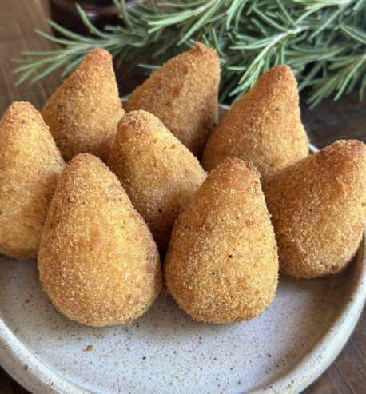
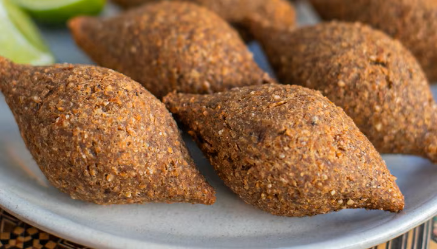
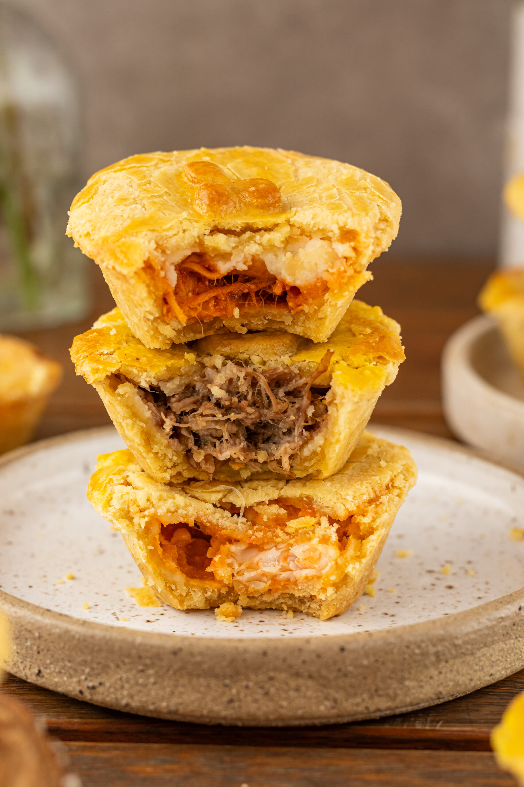
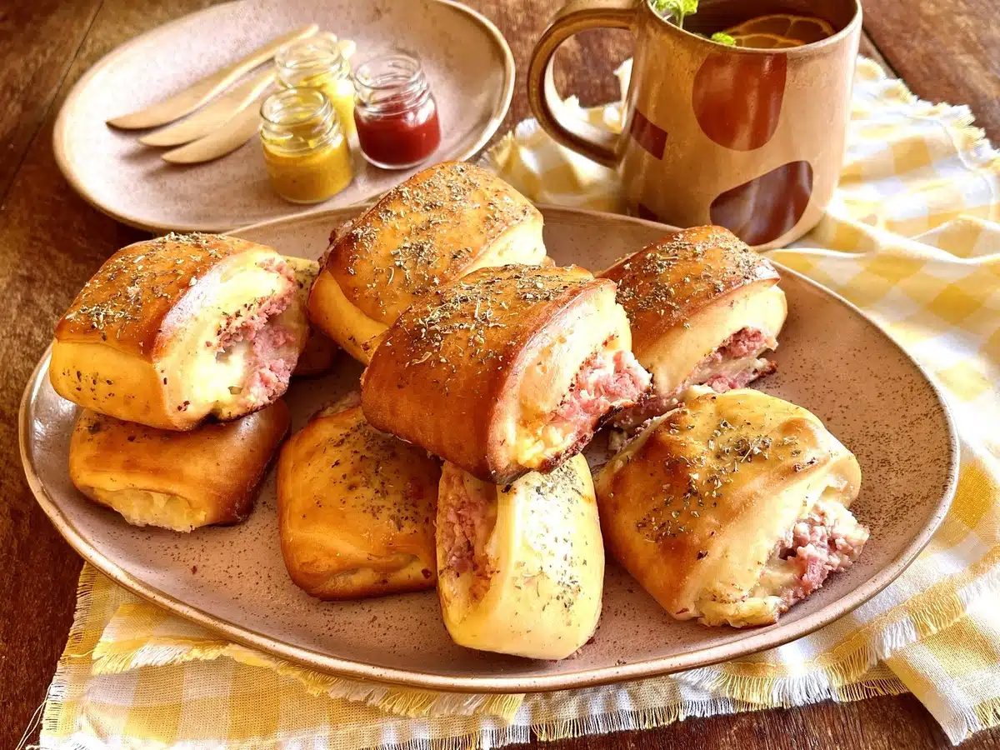

Coxinha de Carne e Frango com Catupiry
Massa dourada e crocante por fora, super recheada com carne ou frango desfiado e Catupiry legítimo.
Encomendar
Quibe Tradicional
Massa de carne com hortelã fresca bem temperada, frito na hora e muito sequinho.
Encomendar
Bolinha de Queijo
A clássica e crocante bolinha recheada com muito queijo mussarela derretido.
Encomendar
Empada
Massa podre que derrete na boca com recheio cremoso e bem temperado de palmito ou frango ou carne seca.
Encomendar
Pastel de Forno de Carne
Massa leve assada no forno, recheada com carne moída super suculenta.
Encomendar
Enroladinho de Presunto e Queijo "Pão italiano"
Massa leve e fofinha assada, recheada com uma combinação perfeita de presunto e mussarela.
Encomendar